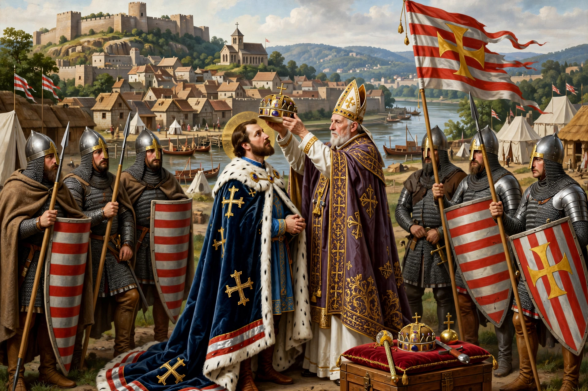

| Kingdom of Hungary | |
|---|---|
 | |
| Capital | Esztergom, later Székesfehérvár / Buda |
| Dynasty | Árpád |
| Period | 1000 – 1301 |
The Kingdom of Hungary in the Árpád era began with the coronation of Stephen I on 25 December 1000 (or 1 January 1001) and ended with the extinction of the Árpád dynasty in 1301.
Stephen organised a Christian kingdom: bishoprics, counties administered by ispáns, written laws and coinage. His successors faced succession struggles and Byzantine and Imperial pressure, yet Hungary consolidated control over the Carpathian Basin, Croatia (from 1102, in personal union) and Transylvania.
Andrew II's Golden Bull of 1222 limited royal power and affirmed nobles' rights. Béla IV rebuilt after the devastating Mongol invasion of 1241–42, founding stone castles and towns including Buda. Under later Árpáds, oligarchic magnates grew powerful.
Andrew III died in 1301 without a male heir, ending the Árpád line and opening an interregnum before the Angevins took the throne.